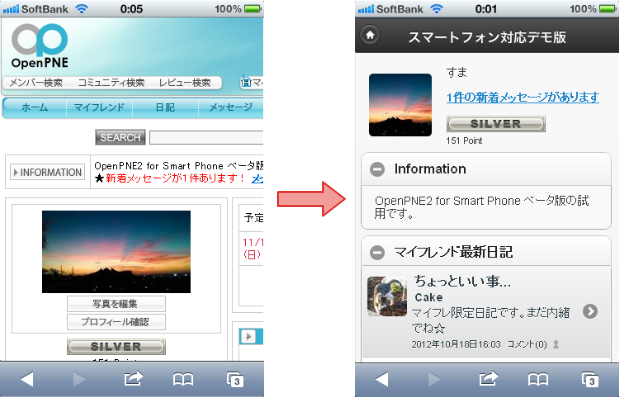

OpenPNE2 for Smart Phoneとは？
OpenPNE2 for Smart Phoneは、広く使われているオープンソースのSNSエンジン「OpenPNE2」を、スマートフォン向けに対応させたソフトウエアです。

OpenPNE2 for Smart Phoneは、広く使われているオープンソースのSNSエンジン「OpenPNE2」を、スマートフォン向けに対応させたソフトウエアです。
動作が軽く、セットアップが簡単なSNS構築ソフトウェアとして実績のあるOpenPNE2に、スマートフォン向け対策をした「OpenPNE2 for Smart Phone」。
ぜひご利用ください。
スマートフォン版画面は、専用のCSSとテンプレートで作成しています。
デザインだけの変更ではなく、コンテンツの配置や表示件数も、スマートフォン向けに調整。
日記やコメントの「もっと読む」では、画面全体を更新するのではなく、続きの記事だけを読み込んで表示するなど、スマートフォンにあわせた機能も導入しました。
スマートフォン版画面は、広く利用されているモバイルフレームワークjQuery Mobileをベースに開発しました。iPhone/Androidなど、多種多様なスマートフォンデバイスに対応できます。*2 *3
スマートフォン表示に対応した機能は、以下の通りです。
SNS登録、日記、コミュニティ、トピック／イベント、メッセージ、マイフレンド機能、招待機能、プロフィール、設定変更対応していない機能の画面は、既存のＰＣ版画面で表示されます。
従来通り、全てＰＣ版画面で表示する事も可能です。切り替えは、ホーム一番下のボタンで行います。